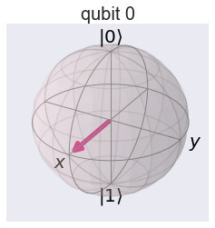

Hadamard Gate
%matplotlib inline
import numpy as np
import IPython
import matplotlib.pyplot as plt
from qiskit import QuantumCircuit
from qiskit import BasicAer
from qiskit.tools.jupyter import *
from qiskit.visualization import *
import seaborn as sns
sns.set()
from helper import *
import glob
import moviepy.editor as mpy
Hadamard Gate (1 qubit)
qc = QuantumCircuit(1)
qc.h(0)
style = {'backgroundcolor': 'lavender'}
qc.draw(output='mpl', style = style)

- Single qubit state vector
backend = BasicAer.get_backend('statevector_simulator')
job = execute(qc,backend).result()
vec1 = job.get_statevector(qc)
vec1
array([0.70710678+0.j, 0.70710678+0.j])
getBlochSphere(qc)

- Single qubit Matrix representation
backend = BasicAer.get_backend('unitary_simulator')
job = execute(qc, backend)
ndArray = job.result().get_unitary(qc, decimals=3)
HM1 = np.matrix(ndArray)
HM1
matrix([[ 0.707+0.j, 0.707-0.j],
[ 0.707+0.j, -0.707+0.j]])
Hadamard Gate (2 qubits)
- Define circuit
qc = QuantumCircuit(2)
qc.h(0)
qc.h(1)
style = {'backgroundcolor': 'lavender'}
qc.draw(output='mpl', style = style)

- State vector (ket, phase and measurement)
backend = BasicAer.get_backend('statevector_simulator')
job = execute(qc,backend).result()
vec2 = job.get_statevector(qc)
vec2
array([0.5+0.j, 0.5+0.j, 0.5+0.j, 0.5+0.j])
- two qubit state vector as tensor product
Since this circuit consists of pure superposition brought up by hadamard gate, it is possible to obtain final state vector by taking direct product of single qubit states. Results from operation of H gate on single qubit can be multiplied with direct product operation to get final state.
$$ \frac{1}{\sqrt{2}} (|0 \rangle + | 1\rangle) \otimes \frac{1}{\sqrt{2}}(|0 \rangle + | 1\rangle) = \frac{1}{2}(|00 \rangle + |01 \rangle + |10 \rangle + |11 \rangle $$
i.e., $$\frac{1}{\sqrt{2}}\left( \begin{array}{cc} 1 \\ 1 \end{array} \right) \otimes \frac{1}{\sqrt{2}} \left( \begin{array}{cc} 1 \\ 1 \end{array}\right) = \frac{1}{2}\left( \begin{array}{cc} 1 \\ 1 \\ 1 \\ 1 \end{array}\right)$$
Where \(|00 \rangle , |01 \rangle , |10 \rangle \) and \( |11 \rangle \) are basis states for two qubit system.
vec2 = np.kron(vec1,vec1)
vec2
array([0.5+0.j, 0.5+0.j, 0.5+0.j, 0.5+0.j])
- Matrix Representation
Based on above Bell circuit, lets construct the matrix representation of the circuit using fundamental gates matrices involved in the circuit.
$$H = \frac{1}{\sqrt{2}} \left( \begin{array}{cc} 1 & 1 \\ 1 & -1 \end{array}\right)$$
- Matrix representation of above quantum circuit
$$ U = H \otimes H = \left( \begin{array}{cc} H & H \\ H & -H \end{array} \right)$$
backend = BasicAer.get_backend('unitary_simulator')
job = execute(qc, backend)
ndArray = job.result().get_unitary(qc, decimals=3)
UM2 = np.matrix(ndArray)
UM2
matrix([[ 0.5+0.j, 0.5-0.j, 0.5-0.j, 0.5-0.j],
[ 0.5+0.j, -0.5+0.j, 0.5-0.j, -0.5+0.j],
[ 0.5+0.j, 0.5-0.j, -0.5+0.j, -0.5+0.j],
[ 0.5+0.j, -0.5+0.j, -0.5+0.j, 0.5-0.j]])
H = 1/np.sqrt(2)*np.array([[1,1],[1,-1]])
U = np.kron(H,H)
print(U)
[[ 0.5 0.5 0.5 0.5]
[ 0.5 -0.5 0.5 -0.5]
[ 0.5 0.5 -0.5 -0.5]
[ 0.5 -0.5 -0.5 0.5]]
- Exercise: Hadamard Gate (3 qubits)
Consider a 3 qubits quantum circuit with H gate applied to each qubit.
qc = QuantumCircuit(3)
for k in range(3):
qc.h(k)
style = {'backgroundcolor': 'lavender'}
qc.draw(output='mpl', style = style)

\(\textbf{Exercise:}\) Using above quantum circuit, find final state vector in ket notation, phase plot and measurement simulation histogram.
\( \textbf{Exercise:}\) Using above circuit, find final state vector by implementing tensor product of three single qubit states.
\( \textbf{Hint}\): \(| \psi \rangle = \frac{1}{\sqrt{2}} (|0 \rangle + | 1\rangle) \otimes \frac{1}{\sqrt{2}} (|0 \rangle + | 1\rangle) \otimes \frac{1}{\sqrt{2}} (|0 \rangle + | 1\rangle) \)
\( \textbf{Exercise:}\) Using above circuit, find matrix representation of the quantum circuit by implementing tensor product of fundamental gate matrices.
\( \textbf{Hint} : U = H \otimes H \otimes H \)
A fun Experiment
qc = QuantumCircuit(2)
for i in range(10):
if i > 1 and i%2==0:
qc.barrier()
qc.h(0)
qc.h(1)
style = {'backgroundcolor': 'lavender'}
qc.draw(output='mpl', style = style)

- Get Bloch

- Get Phase